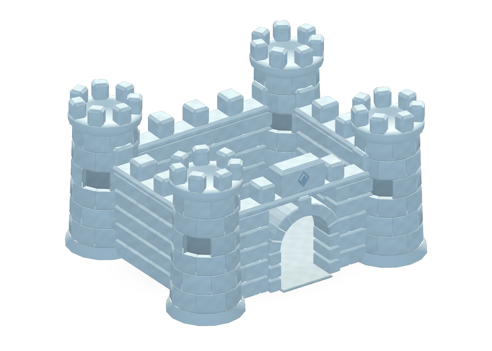
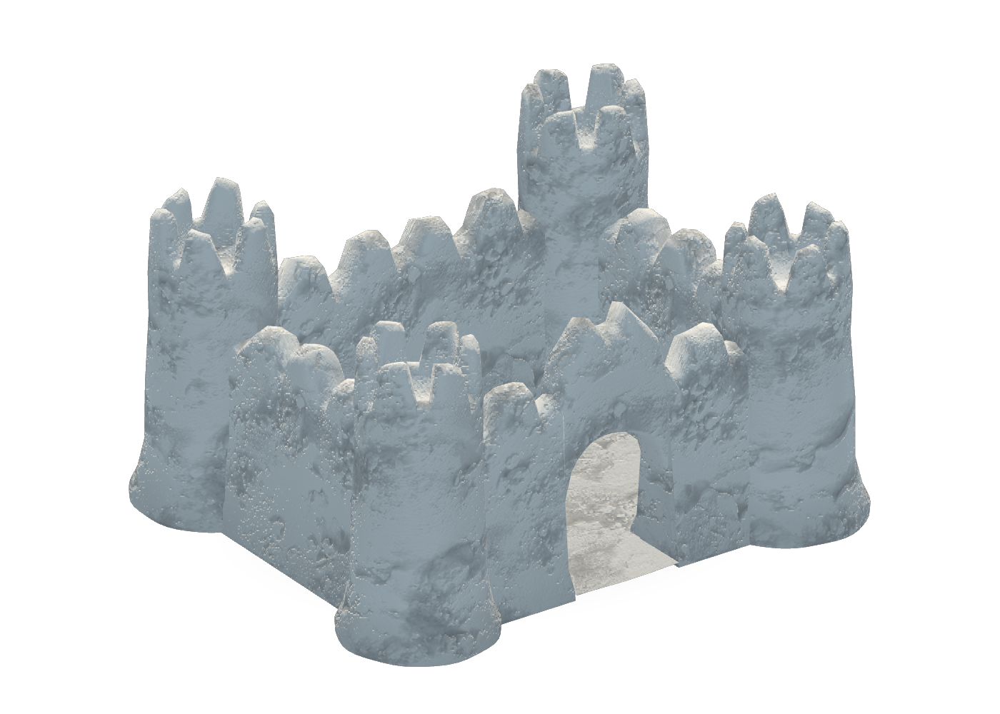

Snow castle — Winter world fit
Native Godot race views of the original castle and its sculpted-snow replacement in the same local circuit, camera, car pose and light. Slide to compare. Left: previous masonry. Right: sculpted snow. Owner and physical-device appearance acceptance remain.
Open full native race image · Actual Winter editor and thumbnail · Validation report

Previous masonry
Continuous packed snow, rounded crests, world snow textureOriginal footprint, solid contacts and saves remain. Igloo and other craft retain their geometry and material behaviour. Castle: 7,950 triangles, compared with 9,890 previously. These are desktop views, not phone performance measurements.